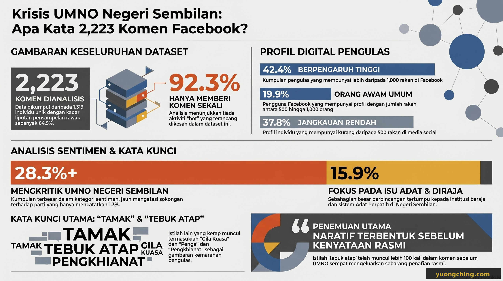

Apabila UMNO Negeri Sembilan mengumumkan penarikan sokongan terhadap Menteri Besar PKR, golongan politik berdebat tentang kesahihan tindakan itu. Tetapi orang ramai sudah pun membuat keputusan mereka — melalui 2,223 komen Facebook. Dan mereka melakukannya sebelum mana-mana parti mengeluarkan sebarang kenyataan rasmi.
Data

Analisis ini menggunakan 2,223 komen awam daripada dua siaran UMNO NS, digabungkan dengan data profil 1,319 pengomen unik — mewakili 64.6% daripada jumlah keseluruhan pengomen, dipilih secara rawak. Pengomen diklasifikasikan kepada tiga peringkat berdasarkan bilangan rakan sebagai proksi bagi jangkauan dan keaslian.
Apa yang ditunjukkan oleh angka-angka ini
Sentimen kritikan adalah organik, bukan direka-reka. 42.4% pengomen mempunyai lebih 1,000 rakan Facebook — pengguna dengan rangkaian sosial sebenar yang mantap. Tiada tingkah laku penyelarasan palsu dikesan: 92.3% pengguna hanya menghantar satu komen, dan tiada pengguna menghantar lebih daripada lima komen. Ini adalah kemarahan rakyat yang tulen.
Naratif 'tamak kuasa' telah mengkristal sepenuhnya. Kata-kata tamak, gila kuasa, tebuk atap, dan pengkhianat bersama-sama muncul lebih 1,200 kali dalam 2,223 komen. Justifikasi rasmi UMNO — bahawa penarikan sokongan adalah respons berpandukan prinsip terhadap kegagalan MB mengurus krisis adat — tidak meresap ke dalam kesedaran awam. Orang ramai telah memutuskan tentang hakikat perkara ini.
Naratif balas PH hampir tiada. Hanya 0.7% komen secara langsung mempertahankan Menteri Besar PKR. Ruang kosong itu diisi oleh kritikan terhadap UMNO, bukan oleh pengesahan positif terhadap tadbir urus PH — satu peluang komunikasi yang terlepas.
Kenyataan parti-parti
Pada 27–28 April 2026, ketiga-tiga parti utama mengeluarkan kenyataan rasmi. Apabila dibandingkan dengan data komen, kenyataan-kenyataan ini mendedahkan sesuatu yang penting: parti-parti bukan sedang membentuk naratif. Mereka sedang bertindak balas terhadap naratif yang telah dibina oleh orang ramai.
Penemuan utama: Naratif awam yang dominan — 'tamak kuasa', 'tebuk atap', 'pengkhianat' — telah terbentuk secara organik sebelum mana-mana parti secara rasmi menanganinya. Menjelang UMNO mengeluarkan penafian terhadap 'tebuk atap', istilah itu telah pun muncul lebih 100 kali dalam wacana awam. Dalam ruang awam digital Malaysia kini, rakyat yang menetapkan medan pertempuran naratif. Elit politik terpaksa bertempur di atas tanah yang bukan pilihan mereka.
Apa yang akan berlaku seterusnya
Sifat organik sentimen kritikan — didorong oleh pengguna berpengaruh, bebas daripada aktiviti palsu yang diselaraskan — bermakna ini bukan ribut media sosial yang akan berlalu dengan cepat. Kerangka 'tamak kuasa' bersifat melekat kerana ia memetakan persepsi awam jangka panjang terhadap UMNO yang sudah wujud sebelum krisis ini. Menjelang PRU16, UMNO NS berhadapan dengan cabaran untuk membina semula kredibiliti di hadapan orang ramai yang telah mengkategorikan episod ini sebagai tindakan mementingkan diri sendiri. Berdasarkan data, kerja itu belum bermula.